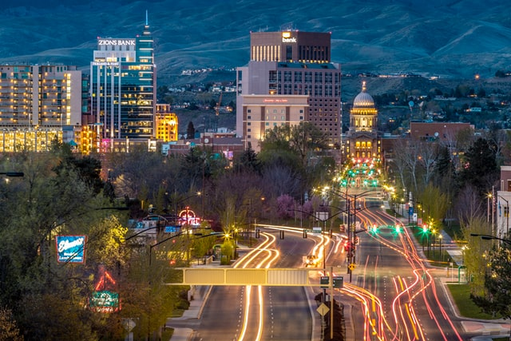

Fish Haven Idaho
Weather Summary
Current: °F
High: °F
Wind Chill:
Humidity: %
Wind Speed: MPH
5 Day Forecast
Upcoming Events
Idaho marks 131 years since becoming the nation’s 43rd state
By Rett Nelson - East Idaho News

People throughout eastern Idaho are gathered with friends and family
Saturday to celebrate America’s independence. Many celebrations
throughout the state are happening on July 3 this year because July 4
falls on a Sunday.
But July 3 is another significant date for residents of the Gem State.
It is the 131st anniversary of Idaho becoming a state. On July 3,
1890, Idaho officially became the 43rd state in the U.S.
Since it officially became a territory on March 4, 1863, it has grown
from a fledgling state of roughly 88,000 people to the state with the
second-highest growth in the nation with a total population of
1,839,106, according to the latest U.S. Census Bureau data released in
April.
Twenty-seven years priors when the U.S. was in the midst of the Civil
War, President Abraham Lincoln officially created the Idaho territory.
The prospect of making more space for the transcontinental railroad
was an attractive idea to Lincoln, along with the area’s abundance of
mineral deposits and natural resources. The State Symbols USA website
says Idaho has 72 types of precious and semi-precious stones, some of
which are found nowhere else in the world. This is how Idaho got
nicknamed the Gem State.
Museum displays do not specifically state why statehood was such a
divisive issue, but its natural resources and geographic features
likely had something to do with it.
In an interview with KTVB last year, retired Idaho State Historian
Keith Petersen elaborated on the conflict in the northern and southern
part of the state and all that was happening in the Idaho territory at
that time.
“Nevada was making a play to annex much of southern Idaho,” Petersen
said. “The most serious action came in 1887 when both houses of the
United States Congress passed a bill which would have allowed the
Idaho panhandle to secede from Idaho and join Washington, but
President Grover Cleveland refused to sign it so it was
pocket-vetoed.”
The movement for statehood gained a lot of momentum the following
year. Petersen explains there were a growing number of members of The
Church of Jesus Christ of Latter-day Saints settling in the territory.
Latter-day Saints voted primarily Democrat in those days because
Democratic presidents were the most sympathetic to the church’s views
on polygamy. (Church leaders later abolished the practice of polygamy
in 1890). Cleveland was a Democrat and so there would’ve been a lot of
support for him among church members during the election in 1888 had
it not been for a piece of legislation passed four years earlier.
Republican state lawmakers established the Idaho Test Oath prevented
Latter-day Saints from voting, holding public office or serving on a
jury, according to Jstor.org.
“Idaho became a really dominant Republican state politically because
Mormons were no longer able to vote,” said Petersen. “Republicans won
the presidency and both houses of the United States Congress. So the
Idaho Republican Party had strong allies in Washington, D.C. suddenly.
All of a sudden, the idea of Idaho perhaps becoming a state gained
great momentum.”
The Republican-elected President Benjamin Harrison was sworn into
office on March 4, 1889 and signed Idaho into statehood more than a
year later. In 2014, the Idaho Legislature established March 4 as
Idaho Day to commemorate the creation of the territory in 1863.